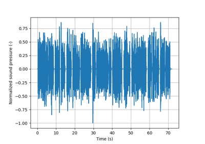
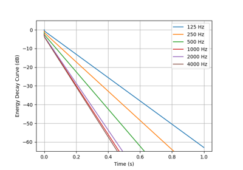
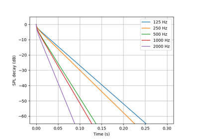

Software Presentation:
Software Use:
Software Theory:
API reference:
Example Gallery:
This gallery contains examples showing typical usage of acousticDE.

Creating an Auralization

The Finite Difference Method

The Finite Volume Method
Gallery generated by Sphinx-Gallery